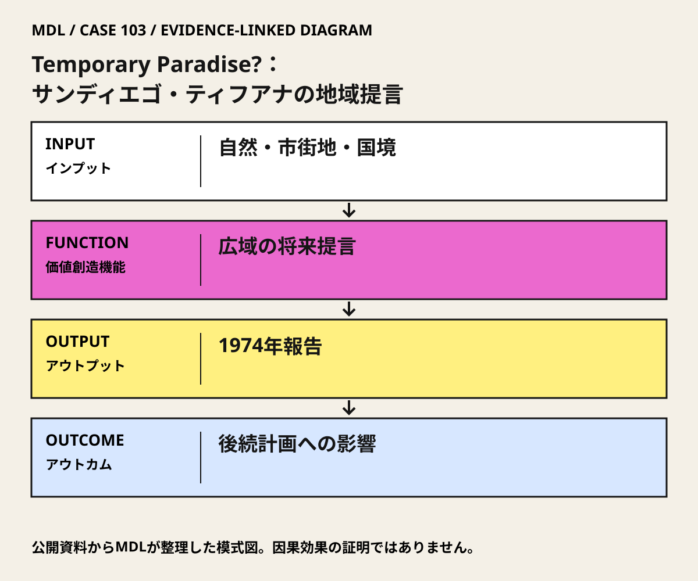

I / INPUT
何を持ち込んでいるか。
活動の出発点となる資源と課題を分けて整理します。「自社」は、その場・制度を運営する組織を指します。
II / VALUE CREATION FUNCTIONS
資源を、どう価値へ変えるか。
以下は既存の8ステップへの編集上の対応づけです。各取り組みの公式な工程名や、全工程を自前で担うことを意味しません。
III / OUTPUT
直接、何が生まれたか。
試作品、データ、契約、標準、育成した人材など、活動から直接生まれたもの。
1974年の共同報告Temporary Paradise?。
IV / OUTCOME
その結果、何が変わったか。
実際の利用、行動、業務、事業、地域の変化。報告された変化と、当該活動に帰属できる効果は区別します。
PROJECT IN FOCUS / 具体的な事例
Temporary Paradise?：サンディエゴ・ティフアナの地域提言
確認できた段階：越境地域の環境・成長・交通に関する調査報告と提言 調査確認日 2026-10-06
誰の課題を、どう扱ったか
確認できた変化
市計画史は、既成地区への成長誘導の考え方が後の成長管理計画に組み込まれたと記す。
評価の限界：正式採択された総合計画や、全提案の施工実績ではない。市計画史には空港移転案が地域側の反対で消えた記述もあり、実現しなかった提案を含む。環境改善・住宅費・越境アクセスへの純粋な因果効果は未確認。
DESIGN BACKWARDS FROM IMPLEMENTATION
社会実装から逆算して、
何を先に整えているか。
実証の先にある導入・運用・継続から、この事例の設計を読み解きます。原典で確認できる仕組みと、MDLの設計解釈・他地域へ応用するための提案を区別して読んでください。「提案」「未実施」と記す内容は、当地で実施済みの工夫ではありません。仕組みの存在と、全案件で成果が出たことも別に扱います。
MORE DETAIL / 運営・根拠・応用
運営の全体像と、学びを深める資料。
費用負担、公表値、応用条件、写真・動画、原典を続けて確認できます。
01どう動かしているのか。
都市を単一の建築や行政区域で切らず、海岸・谷・峡谷、住宅開発、サービス、交通の関係として捉える。既成地区への成長誘導と環境保全を同じ地域像に置き、行政・市民が後続の計画を議論する材料にした。
意思決定と本人の関与：報告の提言採用・予算化・事業化は各公的主体の判断。市計画史は既成地区への成長誘導が後の成長管理へ反映されたと記す一方、全提言の採用を示さない。 Kevin LynchはDonald Appleyardとの共同地域調査・計画提言の著者。交通・環境事業を一括実施した運営者ではない。
- 地域のつながりを把握する
- 成長をどこへ導くか提言する
- 後続の政策・市民活動へ渡す
02誰が負担し、誰が担うか。
Marston家が調査を支援。市計画史は12,000米ドルの助成を記す。実施事業の総予算や継続財源ではない。
制度やプログラムの財源と、各参加企業・地域に発生する費用は同じではありません。公開範囲を超える案件別予算・契約条件は未確認です。
03確認できたこと。
1974年の共同報告Temporary Paradise?。
読み取れる範囲：正式採択された総合計画や、全提案の施工実績ではない。市計画史には空港移転案が地域側の反対で消えた記述もあり、実現しなかった提案を含む。環境改善・住宅費・越境アクセスへの純粋な因果効果は未確認。
原典で確かめる ↗ 出典の説明 ↓04日本で活かすなら。
壮大な将来像をそのまま写すのでなく、自然・移動・土地利用の依存関係と行政間の責任を先に描く。提案、正式採択、実施、生活上の効果を別々に追う。
05そのまま真似できないこと。
正式採択された総合計画や、全提案の施工実績ではない。市計画史には空港移転案が地域側の反対で消えた記述もあり、実現しなかった提案を含む。環境改善・住宅費・越境アクセスへの純粋な因果効果は未確認。
06次に、何を確かめるか。
提案・未実施：提案・未実施：日本の一つの広域生活圏で、郊外拡張・既成地区活用・公共交通と生活サービスの再配置を、現状維持と比較する。
担い手：広域自治体協議会が判断責任を持ち、各自治体の財政・環境・交通担当と住民代表が検証する。
測るもの：土地改変、生活アクセス、インフラ更新費、住宅負担、行政区域を越える負担配分を同じ期間で比較。
継続：保全とアクセスを両立し、財源・運営・合意手続が見える。
修正：便益が一方の地域へ偏るなら配置と費用分担を変更。
停止：不可逆な環境損失や、実施権限・財源の不在を解消できない。
07写真・図と原資料で確かめる。
現場の写真を見る ↑
DIAGRAM: モビリティデザインラボ · 根拠資料 ↗
図の説明
公開資料に基づく模式図。自然・市街地・国境 → 広域の将来提言 → 1974年報告 → 後続計画への影響。実景や地理的配置を示さない。
2026-10-06 · MDL作成の説明図。第三者の写真・図面の複製ではありません。
冒頭写真：海岸、湾、市街地を含むサンディエゴ・ティフアナ都市圏
原資料で、当時の調査・実践を読む ↗08原典を読む。
City of San Diego: Planning History ↗
共同著者、助成、提言の内容、後続計画への影響と未実現案
市の計画史の全文PDF公開・英語。1974年原著とは別資料。2026-10-06確認。
C-3 San Diego: About / Temporary Paradise? ↗
共同著者、Marston家の支援、C-3による活用
紹介本文は公開。原著へのリンクはあるがリンク先PDFの取得・全文閲覧は未確認。2026-10-06確認。